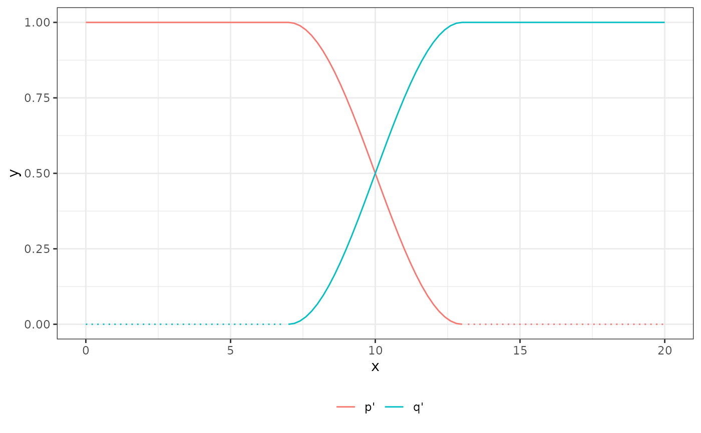

Transition functions for blended distributions
blended_transition(x, u, eps, .gradient = FALSE, .extend_na = FALSE) blended_transition_inv(x, u, eps, .component)
| x | Points to evaluate at |
|---|---|
| u | Sorted vector of blending thresholds, or rowwise sorted matrix of blending thresholds |
| eps | Corresponding vector or matrix of blending bandwidths.
Must be positive and the same dimensions as |
| .gradient | Also evaluate the gradient with respect to |
| .extend_na | Extend out-of range transitions by the last in-range value (i.e. the corresponding u) or by NA? |
| .component | Component index (up to |
blended_transition returns a matrix with length(x) rows and length(u) + 1 columns containing the
transformed values for each of the blending components.
If .gradient is TRUE, an attribute "gradient" is attached with the same dimensions, containing the derivative
of the respective transition component with respect to x.
blended_transition_inv returns a vector with length(x) values containing the inverse of the transformed
values for the .componentth blending component.
library(ggplot2) xx <- seq(from = 0, to = 20, length.out = 101) blend_mat <- blended_transition(xx, u = 10, eps = 3, .gradient = TRUE) ggplot( data.frame( x = rep(xx, 2L), fun = rep(c("p", "q"), each = length(xx)), y = as.numeric(blend_mat), relevant = c(xx <= 13, xx >= 7) ), aes(x = x, y = y, color = fun, linetype = relevant) ) %+% geom_line() %+% theme_bw() %+% theme( legend.position = "bottom", legend.box = "horizontal" ) %+% guides(color = guide_legend(direction = "horizontal", title = ""), linetype = guide_none()) %+% scale_linetype_manual(values = c("TRUE" = 1, "FALSE" = 3)) ggplot( data.frame( x = rep(xx, 2L), fun = rep(c("p'", "q'"), each = length(xx)), y = as.numeric(attr(blend_mat, "gradient")), relevant = c(xx <= 13, xx >= 7) ), aes(x = x, y = y, color = fun, linetype = relevant) ) %+% geom_line() %+% theme_bw() %+% theme( legend.position = "bottom", legend.box = "horizontal" ) %+% guides(color = guide_legend(direction = "horizontal", title = ""), linetype = guide_none()) %+% scale_linetype_manual(values = c("TRUE" = 1, "FALSE" = 3)) 